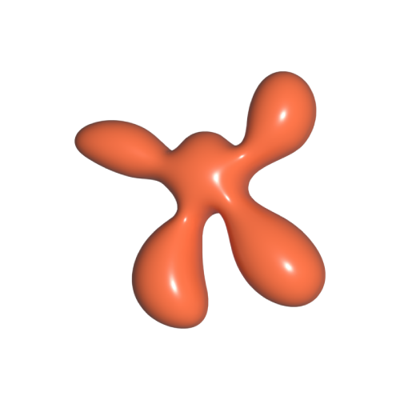
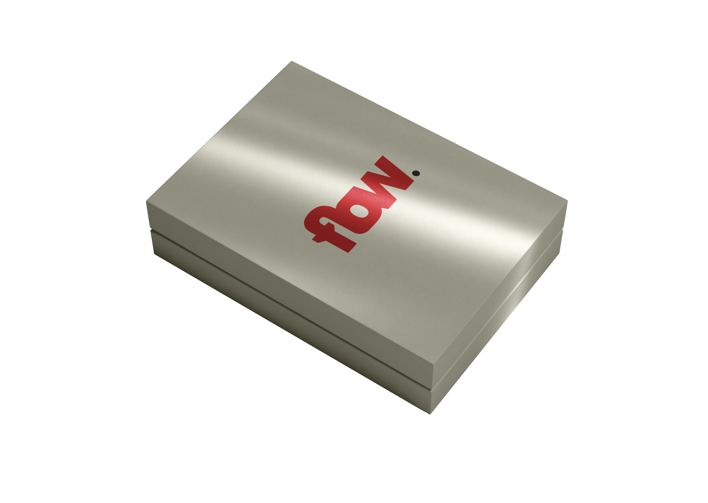
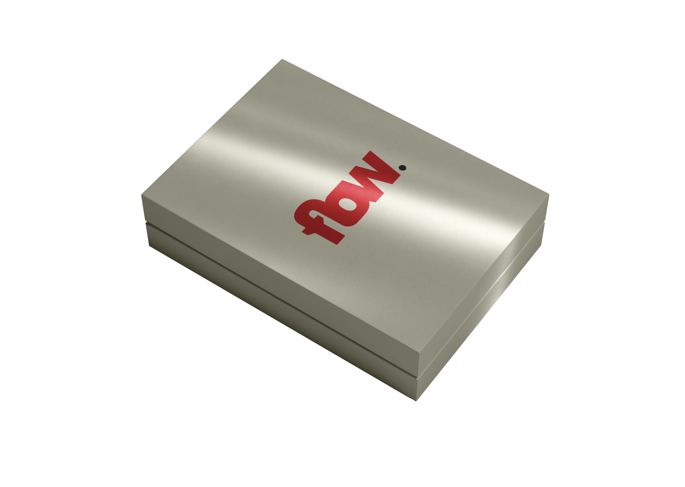
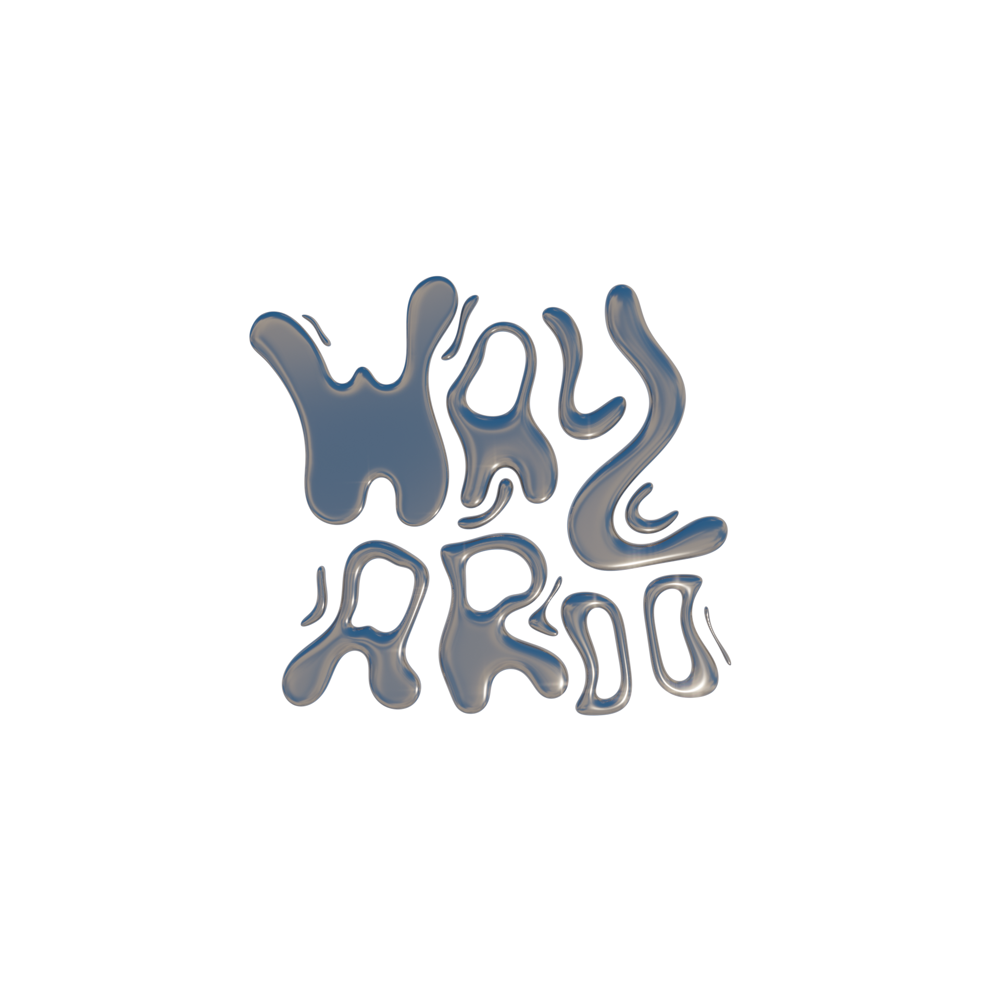
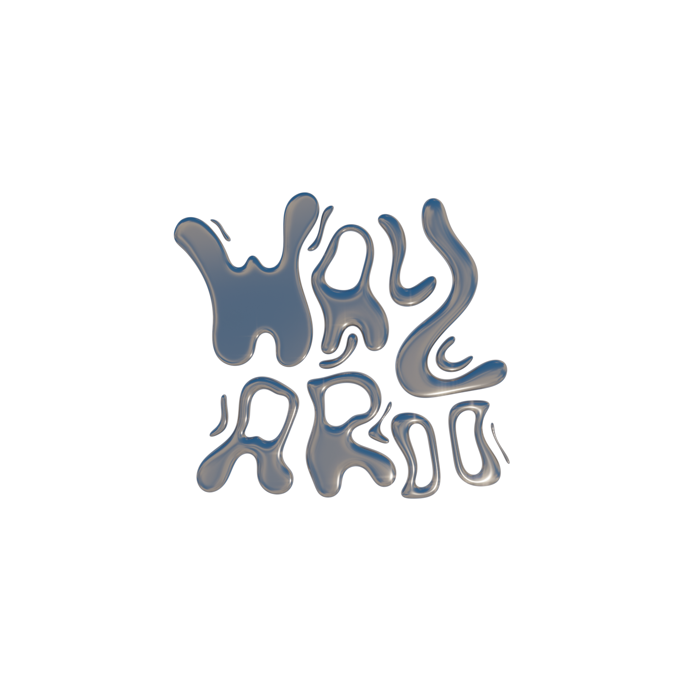
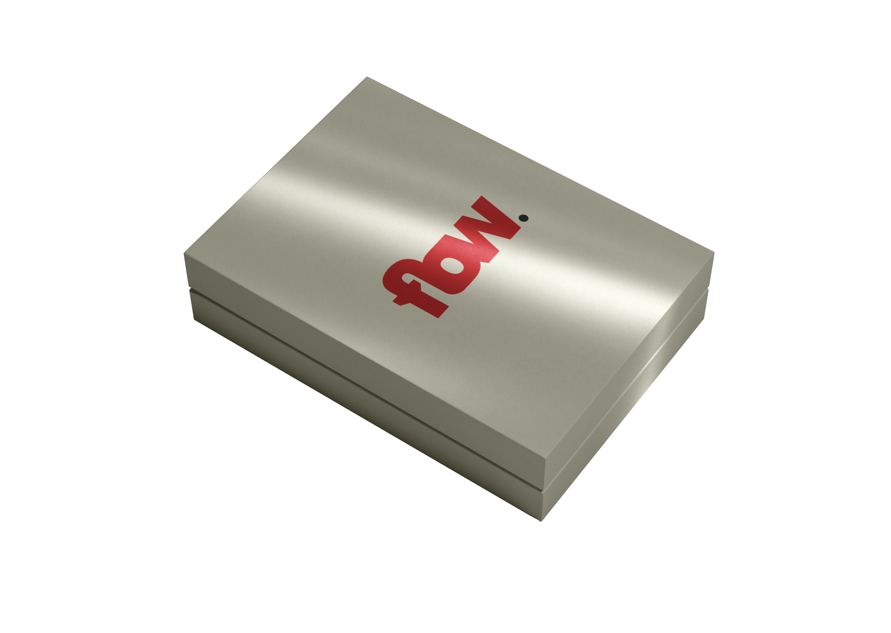
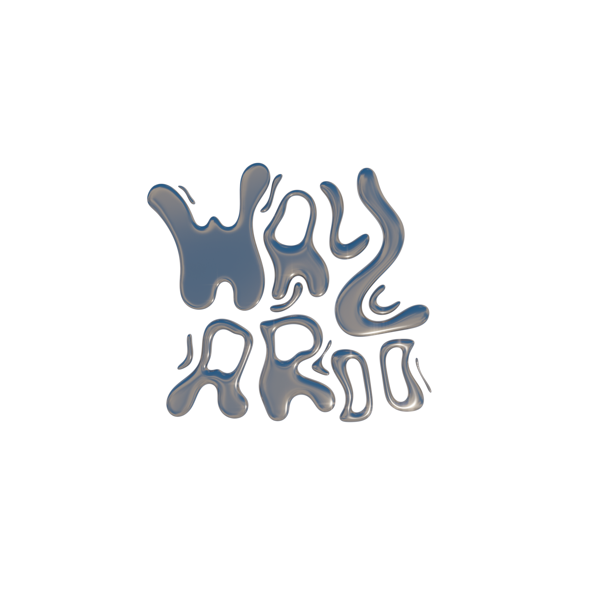
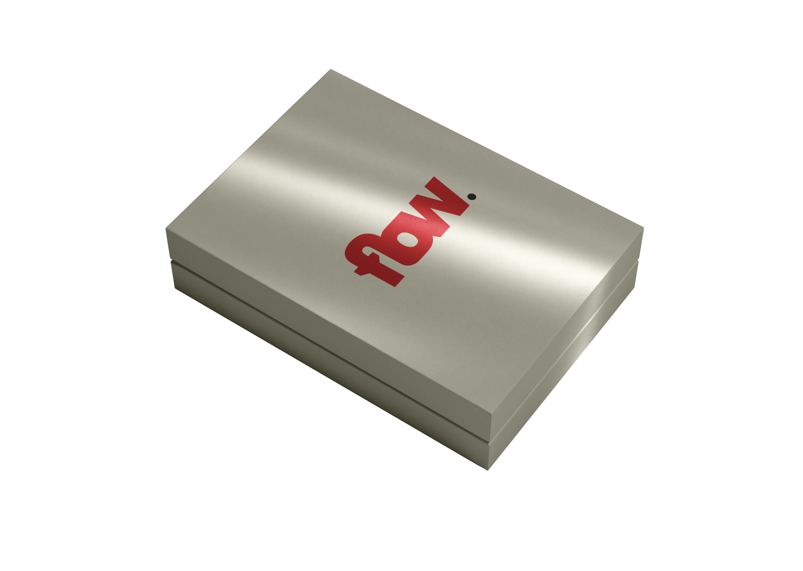
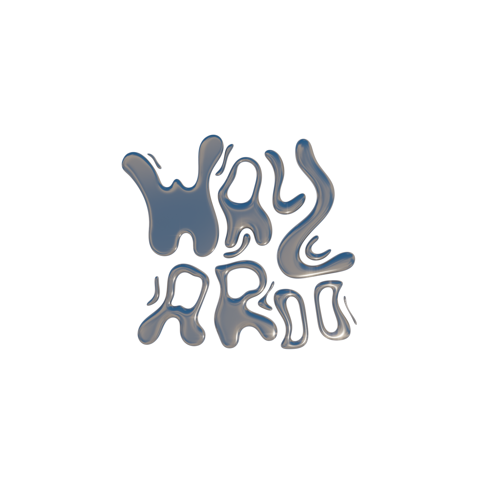

 

 





Last updated June 1, 2025


OpperDash is more than a foodtruck — it’s a movement. Serving fresh, healthy, protein-packed wraps, the brand exists to put people in their power. Through a bold yet playful graphic system, OpperDash reminds its community that they’re doing great — and deserve to feel strong, seen, and nourished. From custom photography to a scroll-stopping visual identity and a big-ass website, every detail radiates vibrant energy and calm confidence. OpperDash is a fitness-focused brand that dares to be sexy, loud, and trend-forward — while staying grounded in health and intention.
Concept & Design: Wolf Ver Elst • Photography by: Staf Smets


For this sold-out club night at STUK – House for Dance, Image & Sound, Marte Forier and I teamed up to create a 2-style-combining and loving visual world. The result? A graphic identity full of contrast — soft and sharp, warm and wired — blending the vibes of both collectives into one cohesive (and cute) story of connection. From posters to digital social media posts, we built a good looking visual system that celebrated love in all its shapes, while staying true to the vibrant energy of both collectives. A true collaboration, full of creative ping-pong, late-night edits, and finding a shared vision.
Concept & Design: Marte Forier & Wolf Ver Elst • Photography by: Staf Smets & Margot Nootens
In collaboration with: gemak!, Chora, STUK and KU Leuven


flow., or my own name backwards. I created a brand identity for myself as a school assignment in 2023, this project was my first deep dive into building a full-scale brand identity from the ground up. It was more than just a design task; it was about translating who I am into a visual and conceptual language. As a dynamic, trend-aware creative, I wanted my brand to reflect my adaptability and fresh perspective. Like a river carving its own path, flow. represents the fluid energy I bring to every project. Whether I’m designing in 3D or experimenting with motion and visuals, I aim to blend elements seamlessly, always keeping things current and engaging.
Concept & Design: Wolf Ver Elst


As part of an exam assignment in 2024, I designed a bold and stylish promotional folder for a fictional brand: Jeep – with one clear goal in mind: to make safaris wild, thrilling, and sexy again. The concept leans into a playful but confident visual style, using flirty, hand-drawn illustrations and a clever folding layout to create something that’s both eye-catching and memorable. The design walks the line between rugged adventure and cheeky elegance, giving the classic safari vibe a modern, fashion-forward twist. This project challenged me to think beyond conventional branding and push the identity into something unexpected yet authentic – a fresh take on how exploration can feel exciting again.
Concept & Design: Wolf Ver Elst


For gemak! collective’s very first event in 2023, I designed a bold and eclectic visual identity that set the tone for who we are. The branding is a direct reflection of our core values: immersion, kindness, and self-cultivation. Each shape and color was carefully chosen to represent different facets of the gemak! experience – from moments of calm and connection to the liberating, playful chaos we embrace. It wasn’t just visual decoration – it was a conversation starter, a mood-setter, and a statement. The final result was intentionally loud, layered, and full of energy – a little chaotic, maybe even too much, but unmistakably us. This project marked the beginning of our visual language and laid the foundation for the collective’s identity moving forward.
Concept & Design: Wolf Ver Elst • Photography by: Ernest Thiesmeier

His work is driven by a deep interest in digital trends, sexy brands, nightlife, and cultural movement...
Inspired early on by his father — a former art director and now independent designer — Wolf studied Digital Experience Design at Thomas More and Graphic Design & Digital Media at Syntra AB. He interned at Statik.be and Uncompressed.be, and now focuses on building brands and websites for emerging creatives and cultural projects.
He designs and develops custom sites in Odoo CMS, and personally manages hosting through One.com.
THE LONG STORY, SHORT:
Wolf loves discovering new ways of working and constantly pushes himself into unfamiliar creative territory. His goal is to grow into a fully-fledged digital creative: one who’s conceptually sharp, technically versatile, and artistically fearless.
His style? Accessible, bold, experimental — with a professional finish.
I mostly work with Adobe Creative Suite, and have hands-on experience with AI tools and other platforms like Figma, and Odoo.
My capabilities include: